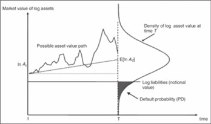
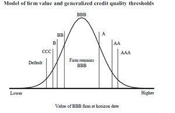

Structured Credit Risk Modeling: Merton and Beyond
1. CynoRisk Analytics Inc. Mathematics Analytics and Data Science Lab, The Fields Institute for Research in Mathematics Sciences, 222 College Street, Toronto, ON, M5T 3J1, Canada
2. Department of Mathematics and Statistics, York University, 4700 Keele Street, Toronto, ON M3J 1P3, Canada
In this paper, we review the literature on the structured credit modeling and its latest development and applications in the risk management and risk capital charges. The Merton model and other asset process based structured credit models are presented in three application fields, which are PD models, PD projection models, and default correlation models. Two latest Merton model industry applications, climate transition risk and DRC IMA model in FRTB, are discussed.
Credit risk, which is the risk that an obligor does not honor his payment obligation, is the most important and the material risk in the financial system. The credit risk is measured at both the individual obligor and portfolio levels, with the most important measurements being the probability of default (PD), loss given default (LGD) and exposure at default (EAD); and default correlation. Credit risk models can be divided into two main classes: structural and reduced form models. Structural models are used to calculate probability of default based on the value of its assets and liabilities. In the reduced form model, or default intensity models, the default of an obligor is modelled as a Poisson process.
The first structural model was proposed by Merton in 1974 [1]. In the Merton model a company’s equity is modelled as an option on the assets of the company. It provides a way of relating credit risk to the capital structure of a firm and the probably of default can be computed via Black-Sholes-Merton option valuation model.
The concept of modeling credit risk via a call option of an asset process has been expanded and become fundamental in credit risk modeling with the applications in asset pricing, risk capital charges (from Basel 2 to Basel 4), PD projection and stress testing and credit provisioning in accounting (IFRS 9), climate change transition risks.
The paper is organized as follows: in Section 2, the Merton model is introduced. In Section 3, the extension of the Merton model and their applications in three fields: 1) implied PD and migration model like Moody’s KMV and CreditMetrics (section 3.1), PD projection models with application in stress testing and IFRS 9 are discussed (Section 3.2), and default correlation models with application with applications in credit portfolio management (Section 3.3). In the Section 4, the latest development of the application of structured credit model in modeling climate risk and Default Risk Charge (DRC) Internal Model Approach (IMA) in Fundamental Review of the Trading Book (FRTB) are discussed. A multi-factor default correlation model that are in compliance with FRTB requirements is presented.
In 1974, Merton proposed a model where a company’s equity is an option on the assets o the company. Assuming a simple capital structure of a firm is:
\( A = Equities+Liabilities = S + B \quad [1] \)
The firm is limited liability firm. Assume that at time T, the firm (equity) will be faced with a payment obligation of D. If the firm’s value is less than the payment obligation, equity will declare bankrupt of the firm. The key assumption of the Merton model is that both equity and debt can be viewed as derivative securities on the value A, with the following payoff
\(B(A,t) = \min(D, A), \quad S(A,t) = \max(A - D, 0) \quad [2] \)
The value of assets A is assumed to follow a log-normal diffusion process that is under the physical probability measure:
\(dA = \mu A dt + \sigma A dW(t) \quad [3] \)
where W(t) is the standard Brownian motion, m is the instantaneous expected return on assets, σ is the constant proportional volatility of the return on the firm value. Following the standard Black-Scholes-Merton pricing theory, we can solve it via an PDE approach. The firm defaults if A<D. The PD of the firm can be computed as:
\(PD(T) = \mathbb{P}(A(T) < D)=\Phi\left( \frac{\ln(D / A(t)) - \left(\mu - 0.5 \sigma^2\right)(T - t)}{\sigma \sqrt{T - t}} \right) \quad [4] \)
The concept of the Merton model, in which PD is option (with strike D) on its asset value, can be illustrated in the figure below.
|
Figure 1. The Merton Model  |
The simplicity of the Merton model relies on applying the Black-Scholes-Merton formula of pricing the European options to value firm’s equity and debt. However, this comes at the cost of too simplistic assumptions regarding the asset value process, interest rate, and the capital structure. Since the Merton model was developed, there has been many efforts to improve the model, which has been proved to be challenging.
However, the concept of the Merton model has become fundamental to the credit risk modeling and has found many applications in the financial industry. Three major industry application of the structured credit model is discussed in this section.
The structured credit model, which has a widespread practical usage, is Moody’s KMV model [2]. There are few changes made to the Merton model in the KMV model. First, Instead of the Gaussian distribution, the EDF in KMV model is replaced by some decreasing function that is empirically estimated; Secondly the liabilities is replaced by one that better reflects the firm’s liabilities.
An important quantity of the KMV model is the so-called distance to default (DD):
\( \text{DD} = \frac{\ln\left( \frac{A(t)}{D} \right) + (r - 0.5\sigma^2)(T - t)}{\sigma \sqrt{T - t}} \quad [5] \)
Another widely used structured credit model in the industry is the one proposed by CreditMetrics [3], in which both default and credit quality, measured by rating, are linked to the firm’s asset value, as shown in Figure 2. The PD and migration can be modeled as
\( PD(Default) = \mathbb{P}(A < X_{Def})=\Phi\left( \frac{X_{Def}}{\sigma} \right) \quad [6] \)
\( PD(CCC) = \mathbb{P}(X_{Def} < A < X_{CCC})=\Phi\left( \frac{X_{CCC}}{\sigma} \right) - \Phi\left( \frac{X_{Def}}{\sigma} \right) \quad [7] \)
It can be used to model both rating migration and default risk, which is required in the Incremental Risk Charge (IRC) in Basel 2.5 [4] and valuation/risk/capital model in Credit Valuation Adjustment (CVA). The model can also be used for credit derivatives pricing (For example, see [5, 6]).
|
Figure 2  Source:CreditMetrics - Technical Document: The Benchmark for Understanding Credit Risk |
PD (and migration) projection under various macroeconomic and financial scenarios has important applications in credit risk research [7], stress testing, and credit provisioning for credit portfolio (IFR9) [8]. The basic model is based on linear regression, which is calibrated to the historical data of default rate and macroeconomic and financial variables. The calibrated regression parameters are then used to forecast PD with given scenarios, as shown in Figure 3.
Historical PD itself can not be directly regressed against macroeconomic and financial factors like GDP, unemployment rate, interest rate, etc. It needs to be converted to a standardized asset process in the Merton framework and then put into a regression model as follows:
\( X(t) = \Phi^{-1}(PD(t)) = \alpha + \sum_{j=0}^{k} \beta_j F(t - j) + \varepsilon(t) \quad [8] \)
where correspond to a vector of macroeconomic and financial regressors with time lag j and is the error term. The calibrated model parameters can then be used to project PD or migration following the standard linear regression procedure. An example of how a credit portfolio is linked to macroeconomic and financial factors are shown in Table 1.
A more complicated model, which can project PD term structure for Comprehensive Capital Analysis and Review (CCAR) stress testing and IFRS 9 ECL can be found in Ref. [9].
| Portfolio | Credit Spread | Gov Interest Rate | Interest Rate Corp | Unemployment Rate | GDP | Equity Return | Equity Vol |
|---|---|---|---|---|---|---|---|
| Small Commercial | CorpBBB10Y, 30%, 2Q lag | Gov10Y, 20%, 3Q lag | 50%, 3Q lag | ||||
| Large Commercial | CorpBBB10Y, 50%, 3Q lag | Gov10Y, 20%, no lag | 30%, 3Q lag | ||||
| Corporate | CorpBBB10Y, 40%, no lag | 30%, 3Q lag | Equity Vol, 30%, 3Q lag |
Default correlation measures whether credit risky assets are more likely to default together or separately. It is essential for estimating the risk of credit portfolios. For the credit derivatives with multiple assets as the underlying asset pool like Collateral Debt Obligation (CDO), correlation risk is the major risk factor, which are captured via default correlation models such as the normal copula model.
Most default correlation models can be directly or indirectly linked to correlated asset process and PD mapping through a threshold, within the Merton model framework.
The most important (and material) application of this concept is the Vasicek model, which is used to compute regulatory capital [9, 10]. Assume a credit portfolio loss with N assets, with each asset following a one factor process:
\( Portfolio\ Loss = \sum_{i=1}^{N} LGD_i \mathbf{1}_{\{X_i > U_i\}} \quad [9] \)
\( X_i = \rho_i S + \sqrt{1 - \rho_i^2} \, \varepsilon_i \quad [10] \)
Here is the obligor default indictor. is the “normalized” asset process with a default threshold of . is the correlation; is an independent random number with standard normal distribution. S is the one common factor that shared by all obligors. It can be shown that correlation between two obligors is .
If we assume the portfolio is large enough that the individual risk is diversified away and we can approximate the percentile loss with variable percentile of the common factor:
\( \alpha_q(Portfolio\ Loss) \approx \alpha_q \left( \mathbb{E}[Portfolio\ Loss \mid S] \right) \quad [11] \)
\[ = \sum_{i=1}^{N} LGD_i \left( 1 - \Phi\left( \frac{U_i - \rho_i \alpha_q(S)}{\sqrt{1 - \rho_i^2}} \right) \right) \quad [12] \]
Based on the Vasicek model, the regulatory capital for a credit portfolio is defined as the unexpected loss at 99.9 percentile over one-year time horizon.
One latest application of Merton type model is to model climate-related transition risk. A Merton framework is used to link the climate transition scenarios to credit risk, which is measured by PDs for sector/segment and geography. A detailed description of the model can be found in Ref. [11].
Another latest development is DRC IMA model in FRTB. FRTB is the new risk-based capital requirements for the trading book, which was initiated by the Basel Committee on Banking Supervision (BCBS) in the years following 2008 financial crisis [12].
DRC captures the default risk of any exposure to credit risk, replacing current IRC models in Basel 2.5. DRC IMA is measured using a Value-at-Risk (VaR) model. A multi-factor Monte Carlo simulation model over one-year time horizon is required, with PD correlations and PD/LGD correlation captured in the model.
In our proposed DRC IMA model, a standardized normal asset process is assumed for each obligor, and mapped to the global indices, country (region) indices.
\[ \begin{aligned} X_i =\; & \beta_i^{global} \cdot Y^{global} + \sum_{j=1}^{M} \beta_{i,j}^{country(region)general} \cdot Y_j^{country(region)general} \\ & + \sum_{j=1}^{N} \beta_{i,j}^{base(country(region)\otimes industry)} \cdot Y_j^{base(country(region)\otimes industry)} \\ & + \gamma_i \cdot \varepsilon_i \quad [13] \end{aligned} \]
Weights related to base (country(region)/industry) factors can be assigned based on revenue or discretional decisions.
Following Basel guidelines, default correlation is computed based on historical credit spreads and listed equity prices. Sector definitions need to be based on the bank’s exposure. For a typical global bank, we can have over 10 industry sectors, one government, and one municipal sector. The global factor also serves the purpose of computing PD-LGD correlation. LGD is simulated via a beta distribution.
[1] Merton, R.C. “On the Pricing of Corporate Debt: The Risk Structure of Interest Rates,” Journal of Finance, 29: 449-70 (1974)
[2] Crosbie, P., Bohn, J., “Modeling Default Risk. Modeling Methodology.” Moody’s KMV (2003)
[3] Gupton, G.M., J.P. Morgan & Co, C. C. Finger, and M. Bhatia, “CreditMetrics - Technical Document: The Benchmark for Understanding Credit Risk,” 1997
[4] Tazhi Y., E. Wang, Z. Hu, and M. A. Clayton, “Transition Probability Matrix Methodology for Incremental Risk Charge,”, Journal of Financial Engineering, Vol. 01, No. 01, 1450010 (2014)
[5] Albanese C. and O. Chen, “Implied migration rates from credit barrier models,” Journal of Banking & Finance, vol 30, 607-626 (2006)
[6] Hull, J., I. Nelken, and A. White, “Merton’s model, Credit Risk, and Volatility Skews”, Journal of Credit Risk, Vol 1, No. 1, 3-27 (2005)
[7] Moody’s Investors Service, “Default Trends -Global, December 2021 Default Report,” January 2022
[8] International Accounting Standards Board (IASB), “IFRS 9 Financial instruments. International Accounting Standards Board.” (2014), https://www.ifrs.org/issued-standards/list-of-standards/ifrs-9-financial-instruments/
[9] Yang, B. H, “Point-in-time” Probability of Default Term Structure Models for Multiperiod Scenario Loss Projection,” Journal of Risk Model Validation, Vol 11, No. 1, 73-94 (2017)
[10] Vasicek, O. “Loan Portfolio Value,” Risk (December 2002), 160-62
[11] Huang, H., E. Wang, H. Huang, and Y. Wang, “An Analytical VaR Approach for Credit Portfolio with Liquidity Horizon and Portfolio Rebalancing,” Journal of Credit Risk 11(4), 1-28 (2015)
[12] Hosseini H., C Johnston, C. Logan, M. Molico, S. Shen, and M. Tremblay, “Assessing Climate-Related Financial Risk: Guide to Implementation of Methods., Bank of Canada Technical Report (2022)
[13] Basel Committee on Banking Supervision, “Minimum capital requirements for market risk,” January (2019), https://www.bis.org/bcbs/publ/d457.htm